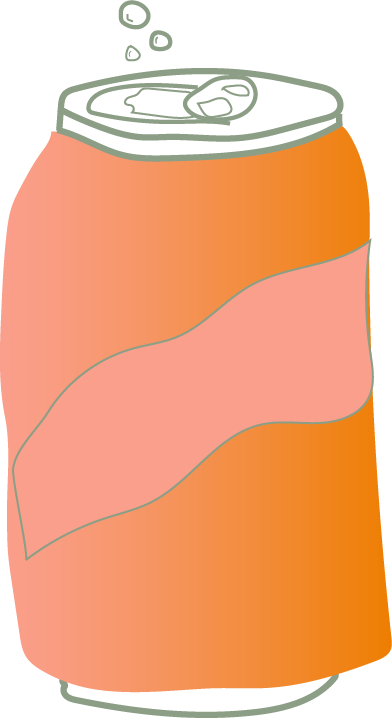

Gezonde frisdrank maken:
Bij de Ceuvel krijg je geen Coca-Cola, maar zelfgemaakte gezonde frisdrank. Met dit stappenplan kan je thuis gemakkelijk je eigen gezonde frisdrank maken.
Benodigheden:
een bakje vers fruit (denk aan aardbeien, frombozen, sinaasappel en citroen.)
1 liter bruisend water
een vervanging van suiker (honing of stevia naar smaak)
een grote kan
Ijblokjes
Instructies:
Nu je alle ingrediënten bij elkaar hebt kunnen we beginnen met het maken van onze eigen gezonde frisdrank.
Snijd het fruit in kleine plakjes of stukjes en doe het in een grote kan
Voeg een liter bruisend water toe aan het fruit in de kan en roer het goed door
Laat de kan met water en fruit minimaal 2 uur in de koelkast staan, zodat de smaak van het fruit goed in het water trekt.
Haal de kan uit de koelkast en breng de frisdrank eventueel nog op smaak met honing of stevia.
Nu is het tijd om de frisdrank te serveren, dit is het lekkerste met wat ijsklontjes. Doe dus wat ijsklontjes in een glas en schenk de frisdrank erin en genieten maar!
Je kan verschillende variaties maken op deze frisdrank door bijvoorbeeld ander fruit te gebruiken, experimenteer en maak de lekkerste en gezonde frisdrank thuis.